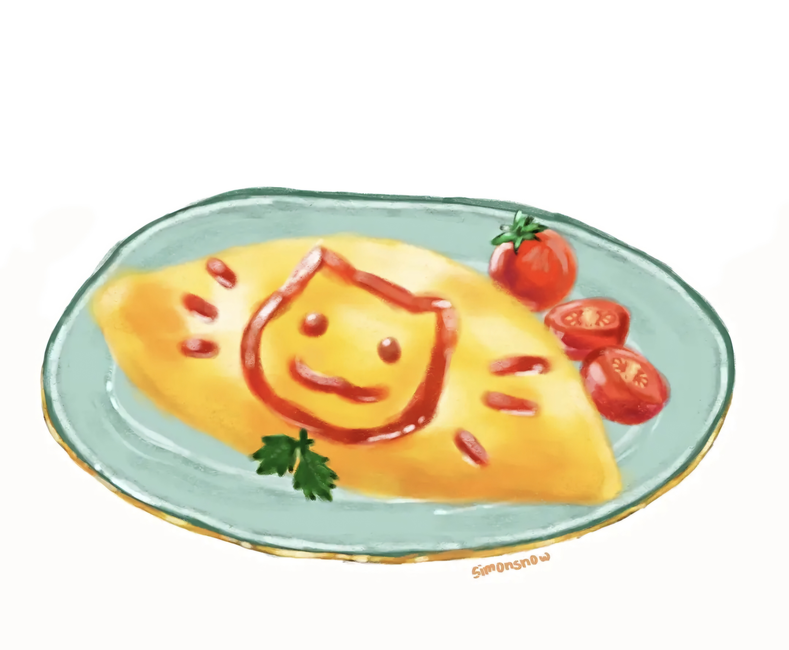
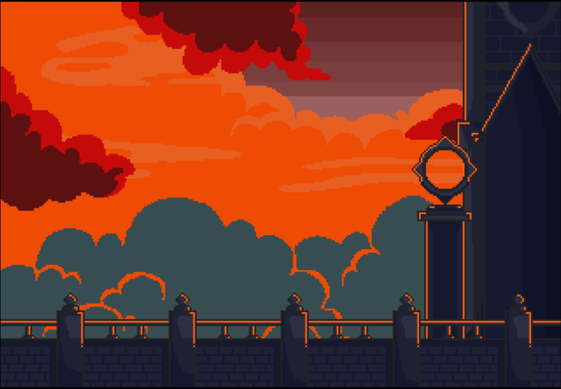
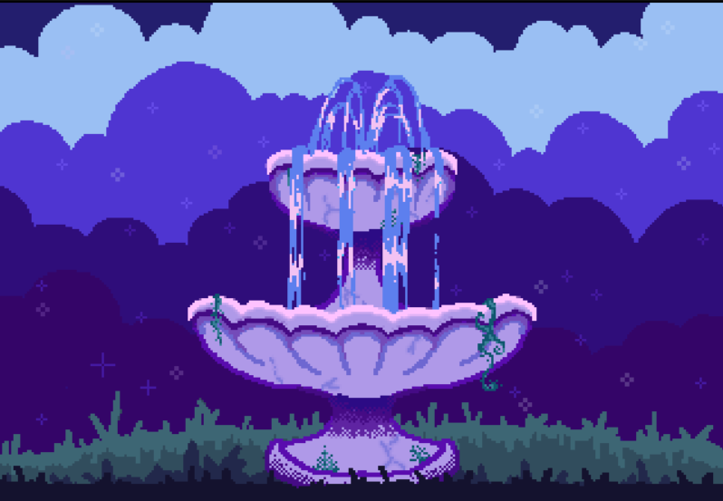
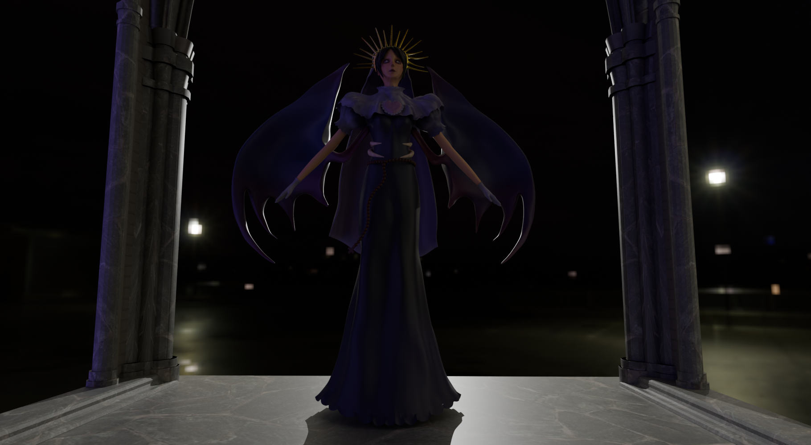
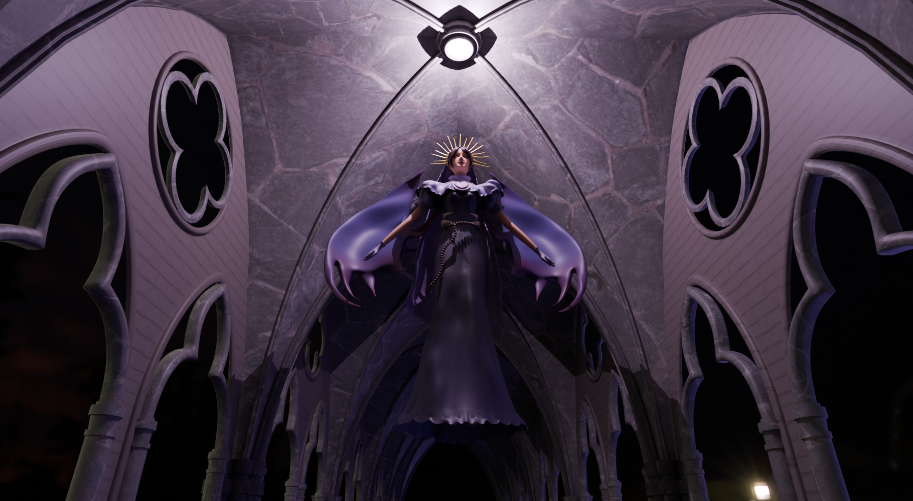

ILUSTRACIÓN
Arte y Diseño

Breakfast
Ilustración

Lazuli
Concept Art

Tiny Kitchen
Diseño Visual

Pixel Art
Pixel

Pixel Art II
Pixel
Estudiante de la Universidad Autónoma de Nuevo León (UANL), en la carrera de Licenciatura en Multimedia y Animación Digital (LMAD), con interés en ilustración digital, modelado 3D, animación y desarrollo visual.
ILUSTRACIÓN



MODELADO




ANIMACIÓN
Exploración de movimiento, timing y presentación visual aplicada a personajes y escenas digitales.
Exploración de movimiento de nuestro chef del juego tiny kitchen.
Exploración de movimiento de nuestra rata del juego tiny kitchen.